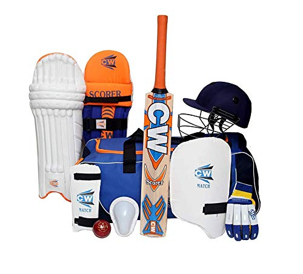

|
Step 1- Gather your equipment
|
 |
Rule 2 - In cricket, there are always two teams of 11 players
Rule 3 - Ruling of the umpire is final
Rule 4 - Every six balls makes a over
Rule 5 - Duration of the game is negotiated
Rule 6 - Professional cricket matches are fixed times
Rule 7 - Batsman and bat both run for an over
Rule 8 - When the ball hits the boundary on a bouce it's a four if it hits on the full it's a six
Rule 9 - Overthrows could potentially help the batsman get runs
Rule 10 - The team with the most runs win the game
CLICK HERE OF YOU LOST YOUR GEAR